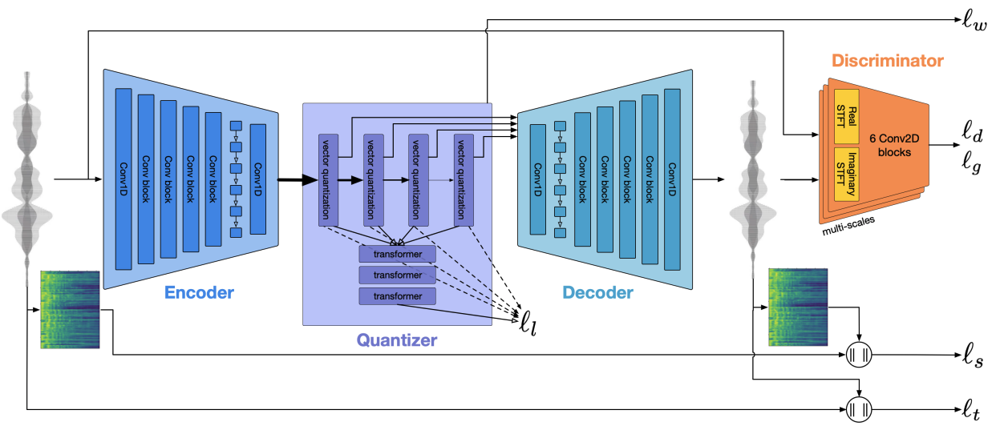
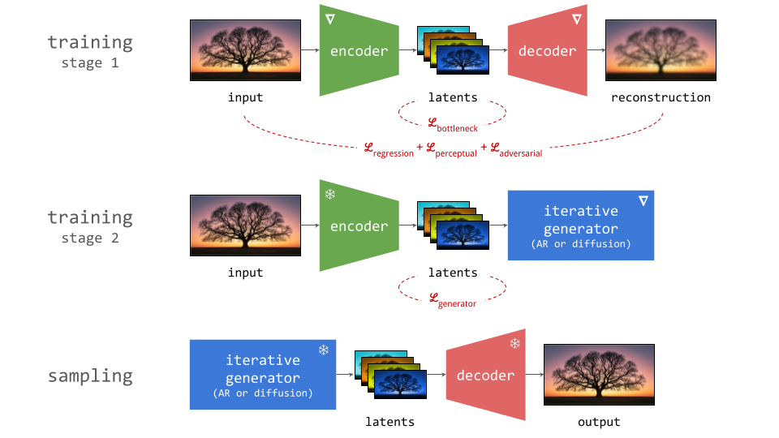
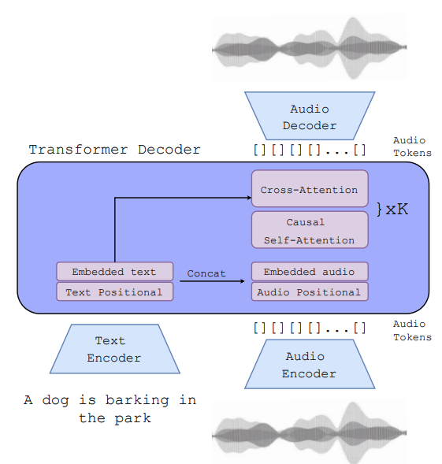
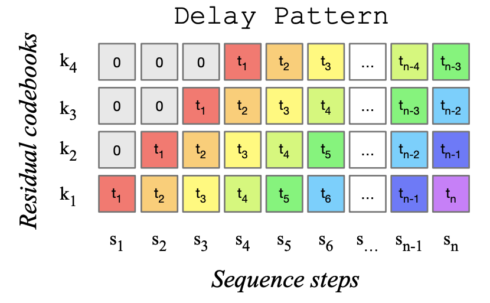

Multimodal & Advanced Models · Deep Dive: Audio Generation
The Sound Dictionary: Audio Tokenization and Neural Codecs
Text models never read raw characters. As you saw in Tokenization, Byte-Pair Encoding turns text into a vocabulary of token IDs that a Transformer can predict one at a time. This lesson builds the same kind of dictionary for sound, then follows a real text-to-music system from prompt to waveform.
In Lesson 1, we saw that a raw waveform is hundreds of thousands of numbers per second. In Lesson 2, we saw that MIDI shrinks music into a short list of instructions, but throws away timbre, voices and room sound.
Neural audio codecs (such as EnCodec, SoundStream and DAC) sit in between. They learn a discrete vocabulary directly from recordings, so audio becomes a short sequence of token IDs while keeping most of what makes it sound real. Once audio is tokens, the Transformer machinery from the Foundations unit works on it almost unchanged.
1. Why Not Predict Raw Samples?
Why not treat every sample as a token and train a Transformer on that? Count the tokens for a 10-second clip:
- At speech quality (16 kHz): 160,000 tokens.
- At CD quality (44.1 kHz): 441,000 tokens.
- With a neural codec (50 frames per second, 4 tokens per frame): 2,000 tokens.
Recall from Attention that every token compares itself with every other token, so the cost grows much faster than the sequence length, and generation produces one token per step. Hundreds of thousands of steps for ten seconds of sound is far too slow. A codec cuts the sequence by roughly 80× to 220×, which brings it inside a normal context window.
2. Text Tokens vs. Audio Tokens
| Text tokenization (BPE) | Audio tokenization (neural codec) | |
|---|---|---|
| Vocabulary size | 32,000 to 100,000 subwords | 1,024 to 2,048 entries per codebook (Section 5 explains why there are several) |
| How the vocabulary is built | Merge rules counted from text | Learned by a neural network from recordings |
| What one token covers | About 1 to 6 characters (varies) | A fixed slice of time, typically 20 ms |
| Turning tokens back into data | Glue the strings together | A decoder network rebuilds the waveform |
| Typical failures | Odd splits of rare words | Robotic timbre, muffled drum hits |
3. The Codec: An Autoencoder with a Bottleneck
A neural codec is an autoencoder: a network trained to squeeze its input into a small code and then rebuild the input from that code. Because the rebuild must match the original, the code is forced to keep what matters. A codec has three parts:
- Encoder. A stack of convolution layers (like the CNNs from the prerequisites, but sliding along time) shrinks the waveform into a short sequence of frames. Each frame is a vector of about 128 numbers summarizing 20 ms of sound.
- Quantizer. Snaps each frame vector to the nearest entry in a learned dictionary, called a codebook. The entry's index is the audio token. Sections 4 and 5 show how this works.
- Decoder. A mirrored network that expands the snapped frames back into a full-rate waveform.

How it is trained, in words. Comparing waveforms sample by sample gives muffled audio, so codecs combine several checks: the rebuilt audio should match the original's spectrogram at several window sizes (Lesson 1), and a second critic network tries to tell real audio from rebuilt audio, pushing the decoder toward realistic texture (the same adversarial idea as the GANs from What Is Generative AI?). An extra term keeps the encoder's frames close to the codebook entries they snap to. The exact losses are in the EnCodec and SoundStream papers.
4. Vector Quantization: Snapping to the Nearest Entry
Quantization is easiest to see in two dimensions. Pretend each frame vector has only 2 numbers, and the codebook has 4 entries at the corners of a square. The quantizer measures the distance from the frame \(z\) to every entry and keeps the closest one. Every point in a shaded region snaps to that region's entry.
The model stores only the winner's ID. The decoder receives the entry itself, not \(z\), so the gap between them (the residual) is information that has been lost.
Click anywhere on the square to move \(z\) (red). The bars show its distance to each entry; the shortest bar wins. The dashed arrow is the residual.
5. Residual Vector Quantization: Stacking Codebooks
Real frames have about 128 dimensions. One codebook of 2,048 entries is far too coarse to cover that space well, and a codebook with millions of entries is too big to train. Residual Vector Quantization (RVQ) fixes this with a chain of small codebooks:
- Codebook 1 snaps \(z\) to its nearest entry. That is a rough guess.
- Codebook 2 does not look at \(z\). It snaps the leftover error from step 1, using finer entries.
- Codebook 3 snaps what is still left over, and so on.
The decoder adds the chosen entries together. Each frame is now stored as a short stack of IDs, one per codebook.
Click to move \(z\). Blue dots are codebook 1, green dots are codebook 2 (placed around the blue winner), orange dots are codebook 3. Add codebooks and watch the approximation close in on \(z\) while the error bar shrinks.
- Codebook 1 captures the big picture: pitch, loud vowels, drum hits.
- Codebooks 2 to 4 restore detail: breathiness, distortion, room reverb.
How small is it? The EnCodec model used by MusicGen produces 50 frames per second with 4 codebooks of 2,048 entries, so 200 tokens per second of 32 kHz audio. That is about 2.2 kilobits per second, versus 512 kilobits per second for the raw 16-bit samples: more than 200× smaller.
Play the melody, then shrink the dictionary. With fewer entries, every note has to snap to one of a few allowed sounds. Gray outlines are the notes that were written; colored blocks are what the tiny dictionary can actually play.
8 ← smaller · larger → 1024
Adjust the slider, then play.
6. From Prompt to Waveform
A text-to-music system such as Meta's MusicGen is built in two stages, then used in a third:

- Train the codec (Sections 3 to 5) on lots of audio, then freeze it.
- Train a Transformer on the codec's tokens with ordinary next-token prediction, exactly as for text. To follow a prompt, a frozen text encoder (T5, one of the three kinds of Transformer) turns the prompt into vectors, and the music Transformer reads them through cross-attention.
- Generate: sample audio tokens one step at a time (with the temperature and top-p settings you already know), then let the codec decoder turn them into sound.

Following the shapes for 10 seconds of music
Each row's output is the next row's input. Two kinds of data take turns: tokens are whole-number IDs picked from a fixed list (like the token IDs from Tokenization), and vectors are lists of real numbers that can take any value, like 0.37 or −1.82 (like embeddings).
| Stage | What runs | Input | Output |
|---|---|---|---|
| Read the prompt | Tokenizer + frozen T5 encoder | Text: "lo-fi guitar, chill rain" | Prompt vectors: (12, 1024)one vector of 1,024 real numbers per text token |
| Generate tokens | Transformer with cross-attention | Prompt vectors (12, 1024) + audio tokens so far | Audio tokens: (500, 4)whole-number IDs: 500 frames × 4 codebooks |
| Look up entries | Sum the 4 codebook entries per frame | Audio tokens: (500, 4) | Frame vectors: (500, 128)one vector of 128 real numbers per 20 ms frame |
| Rebuild audio | Frozen codec decoder | Frame vectors: (500, 128) | Waveform: (320,000,)one number per sample at 32 kHz |
Try it: facebook/MusicGen on Hugging Face · Background: AudioCraft blog
Generate a short clip. Using 50 frames per second and 4 codebooks, how many tokens did the model have to predict?
Read more: in what order are the 4 codebooks predicted?
Each frame has 4 tokens, and the fine ones depend on the coarse one. MusicGen handles this with a delay pattern: codebook 2 runs one step behind codebook 1, codebook 3 two steps behind, and so on, so the coarse token for a frame is always predicted before its finer tokens while all 4 rows still advance together.

Section 2.2 of the MusicGen paper compares this with other orderings.
7. From Research Model to Product
Commercial generators such as Suno and Udio do not publish their designs, but they visibly add several pieces around a core generator:
- Lyrics and vocals. Lyrics are broken into sounds (phonemes) and lined up with the beat so sung words land in time.
- Extend and edit. You can continue a song or regenerate one section. With a token model, this means keeping the existing tokens as a fixed start and generating from there.
- Mastering. The raw output is polished with standard studio effects that even out loud and quiet parts, balance bass and treble, and widen the stereo image, so it sounds like a finished track.
Speed
Ten seconds of MusicGen audio is 2,000 sequential predictions. At 15 ms per prediction that is 30 seconds of compute, three times slower than real time. Two tricks help:
- KV caching, which you met in Context Windows: keep earlier tokens' keys and values instead of recomputing them every step.
- Streaming: decode and play each finished second of tokens while the model keeps generating the rest.
8. Ethical, Legal, and Societal Questions
These models learn from enormous collections of recorded music, most of it copyrighted. Three risks come up again and again:
- Style mimicry. Prompts like "in the style of [artist]" can produce music that competes with that artist's own work. Whether training on their recordings is fair use is being argued in court right now.
- Voice cloning. A few seconds of someone's voice can be enough to imitate it, which enables impersonation and fraud.
- Memorization. A model can occasionally reproduce pieces of its training data closely enough to infringe.
Common responses include refusing prompts that name living artists, adding inaudible watermarks to generated audio so it can be detected later (for example, Meta's AudioSeal), and training only on licensed or public-domain music.
Recommended Learning Resources
- High Fidelity Neural Audio Compression (Défossez et al., 2022) EnCodec: the codec architecture and the full set of training losses.
- SoundStream: An End-to-End Neural Audio Codec (Zeghidour et al., 2021) The first widely used neural codec built on residual vector quantization.
- Simple and Controllable Music Generation (Copet et al., 2023) MusicGen, including the codebook delay pattern.
- AudioCraft (GitHub) Meta's open-source code and weights for EnCodec and MusicGen.
- AudioLDM: Text-to-Audio Generation with Latent Diffusion Models (Liu et al., 2023) A diffusion-based audio generator. Best read after the diffusion lesson in the image unit.
- Stable Audio Open (Evans et al., 2024) An open-weight diffusion model for music and sound effects. Also best read after the image unit.